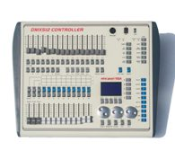

Every rental tech eventually inherits the same 11 p.m. problem: a fixture that "doesn't work," which turns out to be two heads patched to the same start address, or a footprint the patch sheet never accounted for. DMX addressing is not difficult, but it is unforgiving of vagueness. This guide is the version of the explanation we give rental partners — the working math, the paperwork, and the hardware that makes a dry hire inventory behave identically every time it leaves the shelf.
The 30-second refresher
DMX512 is a one-way serial protocol: one transmitter (the console), up to 512 channels per universe, fixtures listening in sequence. Each fixture is told a start address — the first channel it listens to — and it claims a consecutive block of channels after that, called its footprint. A fixture with a 16-channel footprint set to start address 1 listens to channels 1–16. The next fixture on the line must start at 17 or later.
Two rules do most of the work:
- No overlaps. Two fixtures sharing channels will mirror each other's behaviour. (Symmetrical rigs sometimes exploit this deliberately — but deliberately, on paper, not by accident at load-in.)
- Order does not matter electrically — but patch sheets do. DMX does not care which physical fixture sits first on the cable; the console's patch defines which address drives which head. Write the paper to match the room, not the cable.
Footprints and channel modes
A fixture's footprint depends on its channel mode. Most moving heads ship with several: a full mode with fine pan/tilt (16+ channels), a basic mode (8–14), and sometimes a minimal mode (4–6). Rental practice worth adopting:
- Standardise one mode per fixture model across your inventory. When every unit of a model is patched the same way, show files and operator muscle memory transfer between jobs without surprises.
- Prefer basic modes for pars and simple washes — you buy channel headroom for the fixtures that need fine control.
- Spend channels on heads, save them on colour. A head consuming 20 channels of a 512-channel universe is 4% of your universe; a PAR consuming 6 is barely 1%. Budget universes like money.
Worked patch: a 20-fixture one-universe rig
A standard corporate-gig package: 8 moving heads, 8 LED PARs, 4 wall washers, on one universe.
| # | Fixture | Mode | Footprint | Start address | Range |
|---|---|---|---|---|---|
| 1–8 | Moving heads | Full | 16 ch | 1, 17, 33, 49, 65, 81, 97, 113 | 1–128 |
| 9–16 | LED PARs | Standard | 6 ch | 129, 135, 141, 147, 153, 159, 165, 171 | 129–176 |
| 17–20 | Wall washers | Extended | 8 ch | 177, 185, 193, 201 | 177–208 |
Total: 208 of 512 channels used, with 304 channels of headroom for a future expansion — extra PARs, a hazer channel, or second fixtures patched into reserved space. The discipline that makes this scale: allocate fixture groups into blocks (heads block, PAR block, décor block) rather than one continuous chain of addresses. When the client adds four heads on show day, you have a numbered gap waiting instead of a re-patch.
Console-side: what your desk must swallow
The addressing math above is only comfortable if the console can actually manage the patch. Three controllers in our catalogue cover the rental spectrum:
- RG-MINI1024 — US$300 EXW. 1,024 channels (two universes), 96 fixtures, 40 primary + 40 fine-tune patches, and crucially the Avolites Pearl R20 fixture library — meaning show files written on rental-fleet Pearl desks load onto it directly. For a small rental house this is the point where "we can patch anything a client brings" becomes true.
- RG-CTD1024S16F-K — US$298 EXW. 1,024 channels on the DMX512 standard, 96 fixtures with the Pearl lamp library, plus a built-in graphics trajectory generator with 135 built-in effects for clients who want movement looks without an operator programming every step.
- RG-CTD2048-MA — US$495 EXW. MA2-style operation for houses whose freelance operators live on MA consoles, with two DMX outputs, an input port, and MIDI timecode for synced show playback. When your client list starts including bands with their own timecoded playback, this is the desk that stops the arguments.
Distribution: where most "dead fixture" calls originate
The console's output port is a precision receiver at the end of a long chain of abused XLR connectors. Every professional rig protects it and the signal with optically isolated splitting — one input, multiple electrically isolated outputs, each feeding its own daisy chain.
The three formats that cover rental reality:
| Unit | Format | Key spec | EXW |
|---|---|---|---|
| RG-CA8402MINI | 1-in / 4-out compact | Transformer-isolated in and out; fits in a accessory pocket | US$51 |
| RG-CA8802 | 19-inch 1U rack | 4 or 8 independent isolated outputs; amplifies and extends runs | US$51 |
| RG-CA8402A | RDM + IP65 waterproof | DMX512/RDM amplifier-distributor for outdoor and bidirectional rigs | US$98 |
| RG-CA8402C | IP65 waterproof | 4-way isolated output, 3-pin waterproof connectors | US$72 |
Two of these justify their price in ways that are not obvious until you have needed them once. Isolation breaks the ground loops that cause the classic "every fixture flickers when the audio rig powers up" complaint — the isolation transformer in the CA8402MINI is doing real work there. And RDM pass-through is the future-proofing line: RDM lets the console read and set fixture start addresses remotely, which converts your worst ladder-and-flashlight moments into a menu operation. Put RDM-capable amplifiers (RG-CA8402A) in the outdoor rigs now and the inventory upgrades itself as you replace fixtures.
The physical layer: rules the math assumes
Addressing fails silently when the cabling underneath it is wrong, so the chain rules bear repeating — they are short, and they are absolute:
- Daisy chain, never star. Every run is fixture-to-fixture out and through. Splitters exist precisely so that "I need the rig in two directions" does not tempt anyone into a Y-cable.
- Respect the chain limit. The standard allows up to 32 unit loads on one line; in practice, keep a chain to a comfortable 30 or fewer fixtures and split beyond that — the RG-CA8802's eight outputs are eight independent chains, not one long one.
- Terminate the end of every chain. A 120-ohm resistor across pins 2 and 3 of the last fixture's output kills the signal reflections that show up as random single-fixture flicker — the fault everyone blames on "interference" and is almost never interference.
- 3-pin vs 5-pin is wiring, not protocol. DMX512 is identical over both; carry an adapter pair in the work box and the problem disappears.
- Keep DMX away from power. Cross mains runs at right angles where you must, and never run data and mains in the same tray — induced noise is real, and it is the second most common cause of phantom flicker after missing termination.
Older inventory note: fixtures with dip-switch addressing still walk through rental doors. The math does not change — dip switches are simply the binary representation of the start address minus one, so address 17 is switches 1 and 5 up (16 + 1). Print the binary table on the model's patch card and the newest tech preps it correctly.
Rental-house paperwork that actually gets used
The hardware is half the battle; the other half is two documents that travel with the case:
1. The permanent patch card per fixture model. One laminated card per model: channel mode, footprint, dip-switch or menu steps to set every standard start address in your block system, and the fixture's DMX in/out pinout. New techs stop guessing; prep stops stalling.
2. The show patch sheet template. Grouped blocks, reserved expansion space, physical position column ("SL truss mid") next to the address column. The sheet is the contract between the paper and the room — if a fixture on site doesn't match the sheet, the sheet is what gets fixed first.
If you are building the block system from scratch, our step-by-step DMX setup guide covers the physical layer — cabling order, termination, and the daisy-chain rules the addressing above assumes.
The pre-show checklist
Five checks that catch 95% of addressing faults before doors:
- Patch sheet matches physical reality — walk the room with the sheet, not the plan.
- No duplicate start addresses — one pass through each fixture's menu, every time.
- Every fixture responds to channel 1 of its block — a full check, not a spot check.
- Splitters powered and isolated — an unpowered splitter is a surprisingly quiet failure.
- One universe-wide record scene parked in the console, so any operator can produce a safe full-stage look instantly.
Rental houses spec their DMX infrastructure once and live with it for years. If you want the console/splitter mix priced for your inventory size — with EXW factory pricing and volume tiers — send the fixture count and typical show size through the RFQ form.
Frequently Asked Questions
What happens if two fixtures share the same DMX start address?
Both fixtures respond to the same channels identically — they mirror each other. It is occasionally used deliberately for symmetrical looks, but as a patch error it is the most common cause of "this fixture won't do anything different".
How many fixtures can one DMX universe run?
512 channels per universe. Divide 512 by each fixture's channel footprint: ten 48-channel heads fill a universe completely, while fixtures in 6-channel mode let the same universe carry dozens of units.
Do I need a DMX splitter for a small rig?
Below roughly six fixtures and short cable runs, a straight daisy chain works. Beyond that — or anytime you split the run two directions — an optically isolated splitter such as the RG-CA8402MINI protects the console and kills ground-loop flicker.
What does RDM add over plain DMX512?
RDM lets the console talk back to fixtures: read and set start addresses, check status and change modes without a ladder. An RDM-capable line amplifier such as the RG-CA8402A passes that bidirectional data through.
Need help choosing fixtures for your project? Tell us the venue type and room size — we'll spec it for free.
Request a Free Rig Spec →